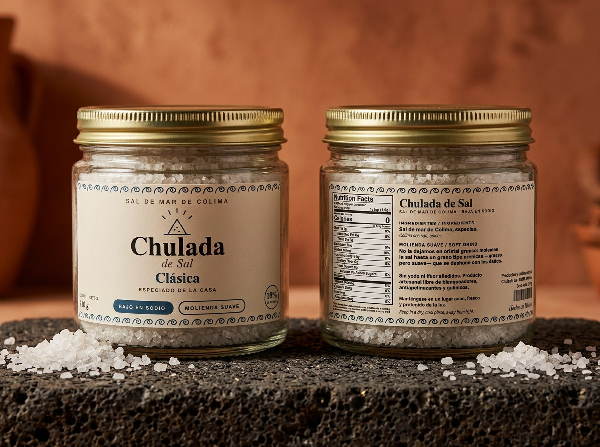
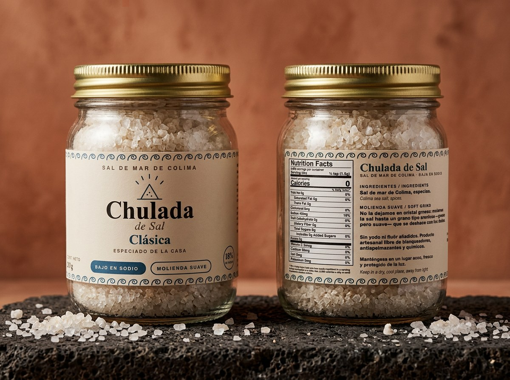

Sal de Mar de Colima · Hecha en México
Sal marina artesanal cosechada a mano en las salinas de Cuyutlán, Colima. Sin aditivos, baja en sodio, con más de 80 minerales del mar.
Cosechada a mano en las salinas del Pacífico mexicano
Naturalmente baja en sodio vs. sal de mesa convencional
Calcio, magnesio, hierro y oligoelementos del océano Pacífico
Cero yodo añadido, cero blanqueadores, cero antiapelmazantes
Nuestra historia
En las costas de Cuyutlán, Colima, el sol y el viento del Pacífico hacen un trabajo que ninguna fábrica puede replicar: cristalizan el agua del mar en capas de sal pura, mineral y viva.
Chulada de Sal nació de la convicción de que lo mexicano es suficientemente extraordinario para ser gourmet. Que no hace falta sal rosa importada del otro lado del mundo cuando tenemos océano, sol y tradición salinera de siglos aquí mismo.
Cada frasco contiene sal cosechada a mano, mezclada artesanalmente en CDMX con especias seleccionadas, y envasada en vidrio — porque la tierra, el mar y tu comida merecen lo mejor.

Sal de Mar de Cuyutlán · Colima · México
Nuestra línea
Todas elaboradas con sal de mar de Cuyutlán. Sin yodo ni flúor añadidos. Molienda suave. Baja en sodio.

Especiado de la Casa
La original. Receta secreta de especias de la casa que complementa cualquier platillo. Molienda suave, cristal grueso.
Inspiración Mediterránea
Hierbas y especias de inspiración mediterránea. Perfecta para pastas, ensaladas, pescados y aceites de oliva.
Espíritu Mexicano
Chiles y cítricos que capturan el alma de la cocina mexicana. Para tacos, carnes, mariscos y guacamole.
Ahumado Natural
Proceso de ahumado puro, sin especias añadidas. Para carnes a las brasas, quesos y platillos con personalidad.
Especiada · Cosechada a Mano
La crema del mar. Recogida a mano de la superficie de las salinas en condiciones perfectas. La joya de la línea.
Elige tus 3 favoritas
La mejor forma de regalar Chulada de Sal. Tres sabores a elegir, presentados en estuche. Perfecto para cualquier ocasión.
¿Por qué Chulada de Sal?
Naturalmente baja en sodio comparada con la sal de mesa convencional. Sin reducir el sabor.
Calcio, magnesio, hierro, potasio y más de 80 oligoelementos presentes en el agua del Pacífico.
Sin yodo añadido, sin blanqueadores, sin antiapelmazantes, sin fluoruros. Solo sal y especias.
Envasada en vidrio. Porque tu comida y la tierra merecen un empaque que no contamina.
| Característica | Chulada de Sal | Sal de mesa común |
|---|---|---|
| Sodio (% valor diario) | 18% por porción | ~48% por porción |
| Minerales del mar | 80+ oligoelementos | Solo NaCl |
| Aditivos | Ninguno | Yodo, blanqueadores, antiapelmazantes |
| Proceso | Cosechada a mano | Refinada industrialmente |
| Origen | Cuyutlán, Colima · México | Sin trazabilidad |
| Empaque | Vidrio sin microplásticos | Plástico o cartón |
Nuestra canción
Una canción hecha con amor para la sal más chula de Colima. Dale play.
Música original · Chulada de Sal · Doo-wop artesanal · 2026
Ofrecemos precios especiales para tiendas gourmet, restaurantes y chefs. También enviamos muestras de presentación a todo el país.
Solicitar cotización mayoreoPedir / Contacto
Escríbenos por WhatsApp o correo para hacer tu pedido. Enviamos a toda la República Mexicana.
🚚 Envíos a toda la República · Tiempo estimado: 2–5 días hábiles